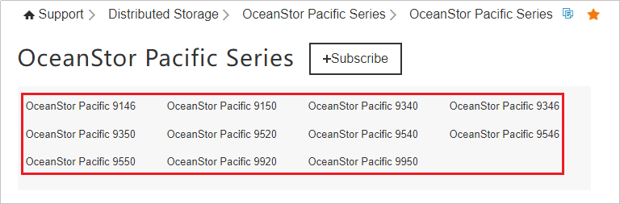

If the production storage of FusionCompute (the protected environment) is a Huawei scale-out block storage cluster, add the agent host to the scale-out block storage cluster to back up FusionCompute. This section uses OceanStor Pacific 8.1.x as an example.
Installing VBS on the Agent Host

If the compute node where VBS is to be installed does not run the scale-out storage OS, install the OS dependency package on the compute node before installing VBS. For details, see Basic Service Configuration Guide for Block > Appendix > Installing the OS Dependency Package in the product documentation of the corresponding storage device version.
For details about how to install the VBS service, see "Allocating Storage Space (SCSI Protocol-Linux) > Creating VBS on Compute Nodes" in the OceanStor Pacific product documentation of the corresponding version. A compute node is an agent host. Set the following parameters as required. Set other parameters based on the document requirements. To obtain the OceanStor Pacific product documentation of the corresponding version, go to OceanStor Pacific Series and select the corresponding model.
- Management IP Address: Enter the management IP address of the agent host.
- Cabinet: Specify the cabinet where the agent host is located. It can be any value.
- Node Role: Select Compute.
- Installation Mode: Select Regular installation.
Replacing OceanStor Pacific Certificates
- Log in to the technical support website and obtain the OceanStor Pacific API package.
To obtain the API package, go to the following path:
- For enterprise users: Click here.
- For carrier users: Click here.
The API package name is OceanStor-Pacific_xxx_API.tar.gz, for example, OceanStor-Pacific_8.1.2_API.tar.gz.
xxx indicates the product version. The API software package name may be in uppercase or lowercase, depending on the version.
To prevent the software package from being maliciously tampered with during transmission or storage, download the corresponding digital signature file for integrity verification while downloading the software package.
After the software package is downloaded from the Huawei Support website, verify the PGP digital signature by referring to the OpenPGP Signature Verification Guide. If the verification fails, do not use the software package, and contact Huawei technical support engineers.
Before a software package is used in installation or upgrade, its digital signature also needs to be verified according to the OpenPGP Signature Verification Guide to ensure that the software package is not tampered with. Visit either of the following websites to obtain the OpenPGP Signature Verification Guide:
For carrier users, visit https://support.huawei.com/carrier/digitalSignatureAction.
For enterprise users, visit https://support.huawei.com/enterprise/en/tool/pgp-verify-TL1000000054.
- Back up the /vbstool directory of the agent host to /opt.
Replace /opt in the command with the actual ProtectAgent installation directory.
For example, run the following command to back up the /vbstool directory to the /opt directory:
cp -r /opt/DataBackup/ProtectClient/Plugins/FusionComputePlugin/bin/vbstool/ /opt/
- Obtain OceanStor Pacific certificate and key files.
- For OceanStor Pacific 8.1.2 and earlier versions, obtain certificate and key files by referring to "export fsm certificate" in the OceanStor Pacific product documentation of the corresponding version.
- For OceanStor Pacific 8.2.0 and later versions, obtain certificate and key files by referring to "Obtaining the dsware-api Certificate File for Interconnecting with OceanStor Pacific" in the OceanStor Pacific product documentation of the corresponding version.
- For other OceanStor Pacific versions, obtain certificate and key files by referring to "Obtaining the dsware-api Certificate File for Interconnecting with Distributed Storage" in the OceanStor Pacific product documentation of the corresponding version.
To obtain the OceanStor Pacific product documentation of the corresponding version, go to OceanStor Pacific Series and select the corresponding model.

- Log in to the agent host as user root using PuTTY.
- Run the following command to create the /scripts directory:
mkdir -p /opt/DataBackup/ProtectClient/Plugins/FusionComputePlugin/bin/vbstool/lib/scripts/
- Use WinSCP to upload the certificate and key files obtained in 3 to the /opt/DataBackup/ProtectClient/Plugins/FusionComputePlugin/bin/vbstool/lib/scripts directory.
- Run the following commands to query and decompress the JRE file.
- Run the following commands to query the JRE file:
cd /opt/dsware/agent
ll
Information similar to the following is displayed. Multiple JRE files may exist in the directory due to reasons such as upgrade. If multiple JRE files exist, obtain the JRE file name corresponding to the latest time.
total 171116 drwx------. 2 root oam 49 Aug 31 2022 bin drwx------. 4 omm oam 28 Aug 31 2022 conf -rwx------. 1 root root 81067968 Sep 9 2022 jre-8u302-linux-x64.tar.gz -rwx------. 1 root root 94152417 Jul 23 20:03 jre-8u392-linux-x64.tar.gz drwxr-xr-x. 2 root oam 49 Jul 17 11:33 script drwxr-x---. 2 root oam 31 Aug 31 2022 tool
- Run the following commands to decompress the JRE file:
mkdir -p /opt/DataBackup/ProtectClient/Plugins/tmp/javarunenv/
tar -zmxvf /opt/dsware/agent/jre-8u392-linux-x64.tar.gz -C /opt/DataBackup/ProtectClient/Plugins/tmp/javarunenv/
- Run the following commands to query the JRE file:
- Use WinSCP to log in to the agent host as user root through the management IP address and upload the obtained API package to the /home directory on the agent host.
- Run the following command to decompress the API package.
In the command, OceanStor-Pacific_xxx_API.tar.gz indicates the API package obtained in 1, and OceanStor-Pacific_xxx_API indicates the directory generated after the API package is decompressed. Replace them based on the actual conditions.
tar -zxvf /home/OceanStor-Pacific_xxx_api.tar.gz
- Run the following commands in sequence in the /home directory to copy the corresponding files:
- In the command, xxx indicates the directory generated after the API package is decompressed. Change it based on the actual conditions. For example, if the API package is OceanStor-Pacific_8.1.2_API.tar.gz, the directory generated after the decompression is OceanStor-Pacific_8.1.2_API.
- During the command execution, if a message is displayed indicating that the fsa_server.key, client_self.keystore, client_trust.keystore, or zk-client.jks file does not exist, ignore it.
cd xxx
rm -rf lib/log4j-*
/bin/cp client_self.keystore client_trust.keystore dsware-api.properties fsa_server.key manager-ssl.properties primary_ks.key standby_ks.key /opt/DataBackup/ProtectClient/Plugins/FusionComputePlugin/bin/vbstool/conf/
/bin/cp dr_cli.xml readme.txt version zk-client.jks /opt/DataBackup/ProtectClient/Plugins/FusionComputePlugin/bin/vbstool
/bin/cp dsware-api-*.jar /opt/DataBackup/ProtectClient/Plugins/FusionComputePlugin/bin/vbstool/lib/
/bin/cp primary_ks.key standby_ks.key /opt/DataBackup/ProtectClient/Plugins/FusionComputePlugin/bin/vbstool/lib/
/bin/cp -r scripts/* /opt/DataBackup/ProtectClient/Plugins/FusionComputePlugin/bin/vbstool/lib/scripts/
/bin/cp -r lib/* /opt/DataBackup/ProtectClient/Plugins/FusionComputePlugin/bin/vbstool/lib/
- Run the following command to create the storage_port.ini file.
touch /opt/DataBackup/ProtectClient/Plugins/FusionComputePlugin/bin/vbstool/storage_port.ini
- Run the following command to copy the so file.
- If the agent host uses the x86 architecture:
/bin/cp -r /opt/DataBackup/ProtectClient/Plugins/FusionComputePlugin/bin/vbstool/lib/linux-x86-64/* /opt/DataBackup/ProtectClient/Plugins/FusionComputePlugin/bin/vbstool/lib/
- If the agent host uses the Arm architecture:
/bin/cp -r /opt/DataBackup/ProtectClient/Plugins/FusionComputePlugin/bin/vbstool/lib/linux-aarch64/* /opt/DataBackup/ProtectClient/Plugins/FusionComputePlugin/bin/vbstool/lib/
- If the agent host uses the x86 architecture:
- Run the following command to import environment variables.
- If the agent host uses the x86 architecture:
export LD_LIBRARY_PATH=/usr/lib64:/opt/DataBackup/ProtectClient/Plugins/FusionComputePlugin/bin/vbstool/lib/linux-x86-64
- If the agent host uses the Arm architecture:
export LD_LIBRARY_PATH=/usr/lib64:/opt/DataBackup/ProtectClient/Plugins/FusionComputePlugin/bin/vbstool/lib/linux-aarch64
- If the agent host uses the x86 architecture:
- Run the following commands in sequence to set the environment variables of the agent host to avoid conflicts with the certificate environment variables:
VBSTOOL_PATH=/opt/DataBackup/ProtectClient/Plugins/FusionComputePlugin/bin/vbstool/lib
sed -i "s#export LD_LIBRARY_PATH=.*#export LD_LIBRARY_PATH=$LD_LIBRARY_PATH:$VBSTOOL_PATH#g" /opt/DataBackup/ProtectClient/Plugins/FusionComputePlugin/bin/vrmVBSTool.sh
- Run the following commands in sequence to replace certificates.
- During the replacement, you need to enter the certificate password, which is the password set in 3.
- In the command, fsm-server.pem is the certificate file, fsm-server.key is the key file, and ca.pem is the CA certificate. Replace them with the file names obtained in 3.
- Replace FSM floating IP address in the commands with the actual IP address.
JAVA_HOME=$(find /opt/DataBackup/ProtectClient/Plugins/tmp/javarunenv/ -mindepth 1 -maxdepth 1 -type d)
sh /opt/DataBackup/ProtectClient/Plugins/FusionComputePlugin/bin/vbstool/lib/scripts/replace_cert.sh -s /opt/DataBackup/ProtectClient/Plugins/FusionComputePlugin/bin/vbstool/lib/scripts/fsm-server.pem -c /opt/DataBackup/ProtectClient/Plugins/FusionComputePlugin/bin/vbstool/lib/scripts/ca.pem -k /opt/DataBackup/ProtectClient/Plugins/FusionComputePlugin/bin/vbstool/lib/scripts/fsm-server.key -f FSM floating IP address -j $JAVA_HOME
- For OceanStor Pacific 8.1.2 and earlier versions, if client_self.keystore, client_trust.keystore, and dsware-api.properties exist in the /opt/DataBackup/ProtectClient/Plugins/FusionComputePlugin/bin/vbstool/conf/cert/FSM floating IP address/ directory, the certificates are successfully imported.
- For OceanStor Pacific 8.1.3 and later versions, if dsware-api.properties exists in the /opt/DataBackup/ProtectClient/Plugins/FusionComputePlugin/bin/vbstool/conf/cert/FSM floating IP address/ directory, the certificates are successfully imported.
- For 1.5.0, if the OceanStor Pacific version is 8.1.3 or later, run the following command to adapt to the new interface. In other scenarios, skip this step.
sed -i '/deleteVolume)/{n;s/"$@"/${@:1:9} 0/;}' /opt/DataBackup/ProtectClient/Plugins/FusionComputePlugin/bin/vrmVBSTool.sh - If the system displays a message indicating that the client_self.keystore and client_trust.keystore files do not exist in 10, run the following commands to copy the files. In other scenarios, skip this step.
cd /opt/DataBackup/ProtectClient/Plugins/FusionComputePlugin/bin/vbstool/conf/cert/FSM floating IP address/ cp client_self.keystore client_trust.keystore /opt/DataBackup/ProtectClient/Plugins/FusionComputePlugin/bin/vbstool/conf/